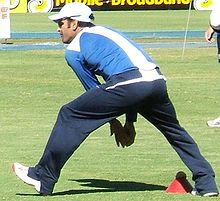
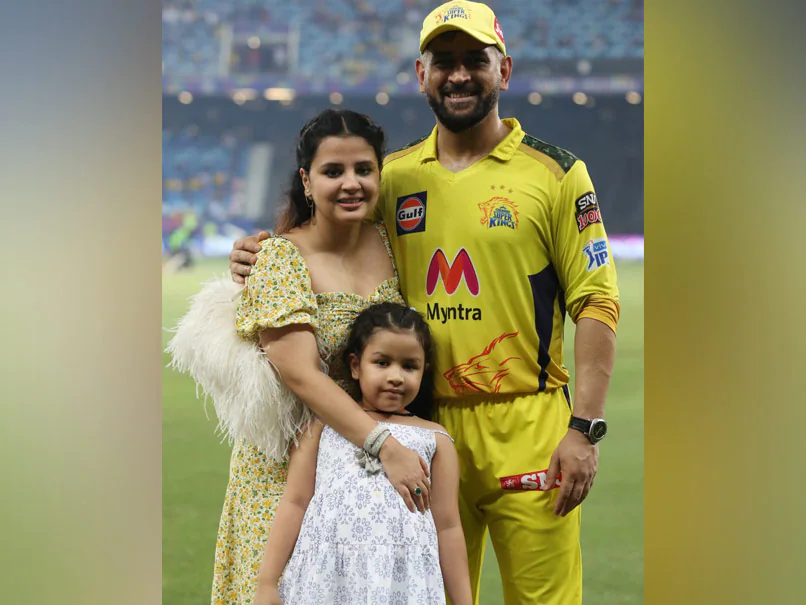

Domestic Career

He debuted in first class and List A Cricket in the season of 1999–2000. In domestic cricket circuit he played for the teams such as Bihar, Jharkhand, India A, Air India Blue, Indian Board President's XI, Rajasthan Cricket Association President's XI, East Zone, Rest of India, East zone under 19, Chennai Super Kings, Rising Pune Supergiant. In BCCI Corporate trophy he played for Indian government owned Air India airlines's Air India team until his resignation from the company in 2013. In 2009, BCCI Corporate trophy Dhoni scored 106 runs playing for Air India Blue team against 'India Revenue' team. In the inning he hit 7 sixes and 7 fours at Chandigarh.
Source
Personal Life

His ancestral village is Lwali, which is in Jaiti taluka of Almora district of the Uttarakhand state. The village has population of 20 to 30 families. His father Pan Singh Dhoni left the village in 1970 for employment. He eventually settled in Ranchi. Dhoni's uncle Dhanpat Singh Dhauni and his cousin Hayat Singh Dhauni still live in Lwali.
He married Sakshi Singh Rawat on 4 July 2010.
The wedding took place in Dehradun, one day after the couple got engaged. Dhoni and his wife have one daughter.
Dhoni is a enthusiast of the Indian Army. While spending a day with the parachute regiment in Ranchi, Dhoni said, "Since childhood I wanted to join the Army. Seeing the soldiers, I thought one day I'll be the same".
Source
Records

Dhoni is the first Indian wicket-keeper to score 4,000 Test runs.
After hitting a six in the third Test against England in Southampton, Dhoni completed 50 sixes as a captain, an Indian record.
Dhoni, with 294 dismissals in his career, ranks first in the all-time dismissals list by Indian wicket-keepers.
Dhoni is third captain (and the first non-Australian) overall to win 100 games.
First player to pass 10,000 runs in ODI cricket with having a career average of over 50.
Most not outs (84) in ODIs.
Dhoni's 183* against Sri Lanka in 2005 is the highest score by a wicket-keeper.
Dhoni and Bhuvneshwar Kumar were involved in a partnership of 100 not out against Sri Lanka, which is India's highest eighth wicket partnership in ODIs.[182]
Dhoni holds the records of the most dismissals in an innings (6) and career (432) by an Indian wicket-keeper.
Dhoni has the most stumpings (123) by any wicket-keeper in an ODI career, and is so far the only keeper to pass 100 stumpings.
Source